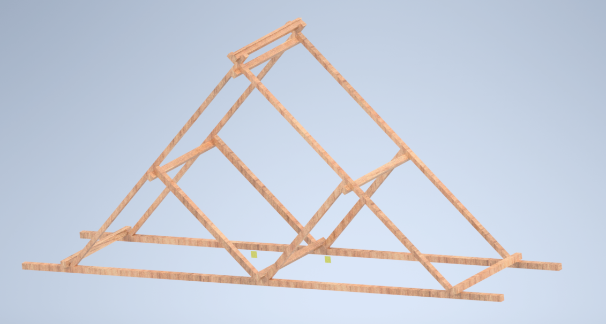

Mechanical Cone Dropper
This is a Mechanical Cone Dropper i helped developed as part of a group project.
Learn moreFor this project we were tasked to desing build and test a Balsa Wood Bridge for the strongest possible structure.
Our bridge was inspired by a traditional Waddell "A" Truss Bridge. The group held a Teams meeting to exchange ideas to produce an initial design. We decided on a triangular shape, with a rectangular cross-section. But to increase the stability and rigidity of the structure we put in support beams and grooves on either side of the diagonal beam to strengthen them.

A 3rd Angle Orthographic Projection Drawing of the Bridge Drawn on AUTOCAD:
A 3D CAD Model of our Bridge Drawn on Inventor:
The Test was done with a T-bar pushing vertically onto the bridge. As the test progressed, the T-bar used started sliding along the long diagonal beam of the bridge. The bridge had some points which were destroyed however the final failure was due the bridge sliding off the test bench rather than it being crushed.

The Truss bridge was designed to withstand and reduce stress and failure on the foot of each of the members. This proved to work well however the bridges vertical; plane has been neglected and so having a member going vertically down through the middle would have improved the rigidity of the bridge massively as was discussed in the analysis and improvements sections. Compared to the mean average of other groups our force for major failure was higher while our overall cost was lower than average due to the implementation of grooves which greatly reduced our cost of glue used.
This is a Mechanical Cone Dropper i helped developed as part of a group project.
Learn more
My projects include a basic Tesla Valve and more recently a Mechanical Cone Placer.
Learn more